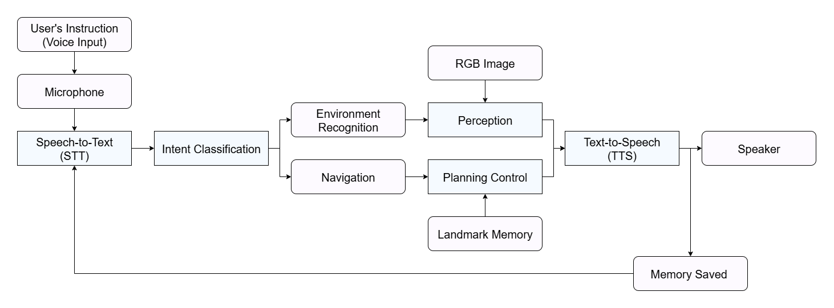

Autonomous Robot Intelligence Laboratory
Dept. of Civil & Environmental Engineering (Smart City)
Seoul National University
Dept. of Civil & Environmental Engineering (Smart City)
Seoul National University
Our research goal is to develop autonomous robotic systems that can perceive, reason, and act in complex real-world environments.
We are interested in robot intelligence, autonomous navigation, perception, decision-making, and the integration of AI to create self-sufficient robotic systems.
Publications
Beyond Destinations: Instruction-Aware Graph Path Planning and Navigation with OpenStreetMap (Conference)
Under Review.
REACTOR: Replanning and Execution with Affordance-awareContextual Tool-use for Humanoid Mobile-manipulation Reasoning (Conference)
Manuscript In Preparation.
Projects
Humanoid Project
Project Led by: Min-Taek Oh, Ph.D. Candidate
Time Commitment: April 2025 - August 2025
Skills: Python, Isaac Sim, ROS, Linux, Git
Time Commitment: April 2025 - August 2025
Skills: Python, Isaac Sim, ROS, Linux, Git
Robotic Box Manipulation
- Simulated box-opening in Isaac Sim with a knife, controlling robot joints and kinematics to replicate realistic manipulation.
Robot Locomotion & Navigation
- Implemented the Nav2 package on the humanoid Go 1 robot in Isaac Sim to enable autonomous navigation and obstacle avoidance.
Robot Dog Project
Project Led by: Donghwi Jung, Ph.D.
Time Commitment: April 2025 - August 2025
Skills: Python, ROS, Linux, Git
Time Commitment: April 2025 - August 2025
Skills: Python, ROS, Linux, Git

LLM and VLM Application
- Integrated speech-to-text (STT) and text-to-speech (TTS) systems to enable natural human–robot interaction.
- Developed intent parsing to interpret user input and determine navigation actions.
Mapping and Localization
- Collected ROS bag data from LiDAR mounted on the Go 1 robot dog and replayed it in SLAM to generate maps.
- Processed maps to remove noise and correct errors, ensuring accurate mapping results.
- Evaluated multiple SLAM algorithms, including Cartographer, slam_toolbox, and RTAB-Map, to produce the most precise map.
- Compared 2D and 3D maps and aligned them to ensure proper spatial consistency.
GPS Tracking
- Designed and developed an Android app to collect real-time GPS and heading angle data from the Go 1 robot dog and generate maps as a temporary solution while awaiting official GPS availability.